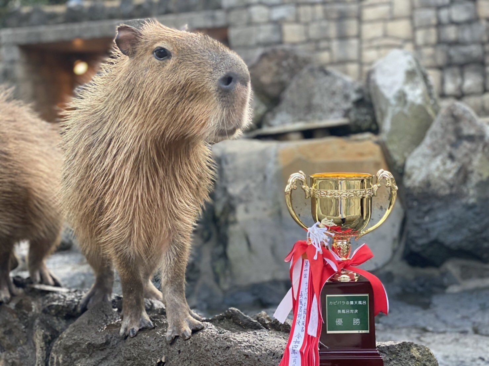
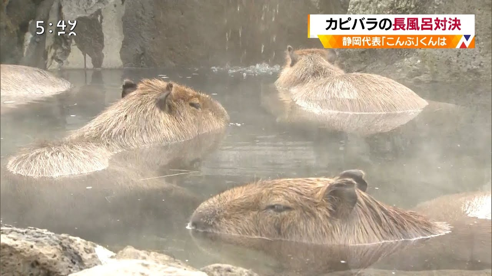

Capybara wins the “Long Bath Showdown” at 1 hour 58 minutes
Capybaras from five zoos nationwide compete for the length of time they can soak in the hot water, and the capybara from Ito City, Shizuoka Prefecture won the championship, gaining popularity among tourists.

Ito City's "Izu Shaboten Zoological Park" uses baths to breed capybaras, and the 1-year-old female "Pol" loves baths the most in the park.
On the 8th of this month, "Pol" competed with capybaras from zoos in Saitama Prefecture, Tochigi Prefecture, Nagasaki Prefecture, and Ishikawa Prefecture in the "long bath showdown" at each zoo.
Last year I was second, but this year I enjoyed the hot water and won with a record of 1 hour 58 minutes 38 seconds, far ahead of the second place. It is the first time in seven years that the capybara of "Izu Shaboten Zoological Park" has won.
Every year from winter to spring, the zoo shows a group of capybaras enjoying their baths. rice field.

A woman in her 30s who visited from Kanagawa Prefecture said, "We also took a bath in the hot springs, but I feel that we are all connected to humans. I can't take a long bath for 1 hour and 58 minutes, so I thought it was amazing." I was.
Mr. Yu Takiguchi, the keeper in charge, said, "Pol is a leisurely person who goes at her own pace, and she usually likes taking a bath. When she won the championship, she was honestly happy."